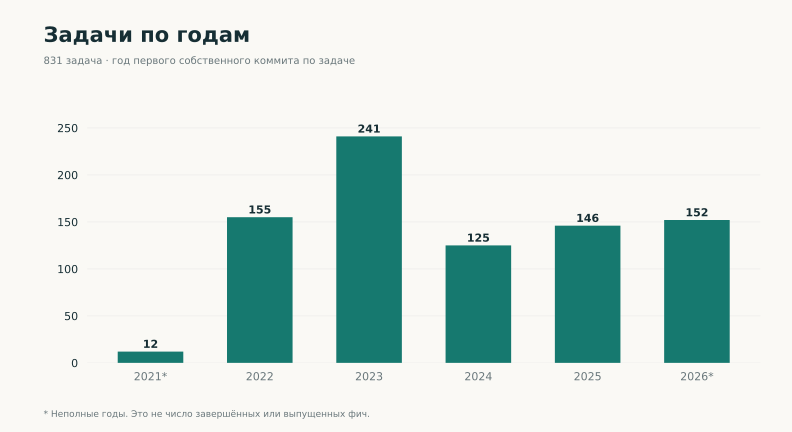
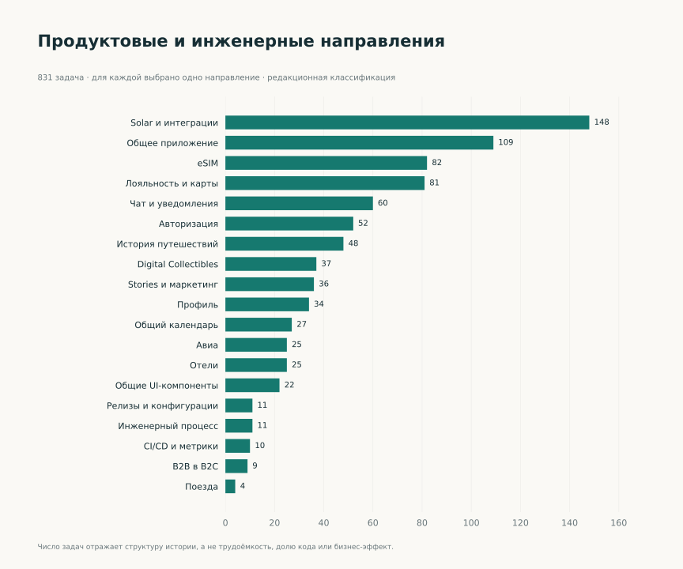
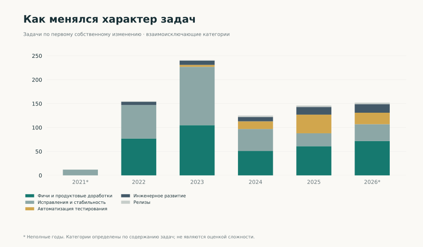
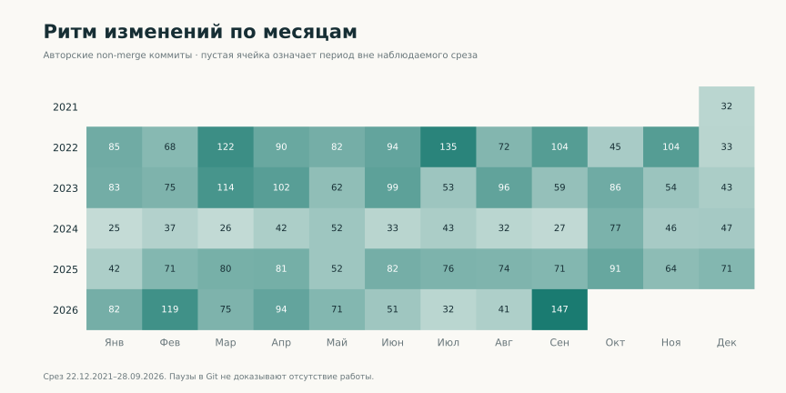
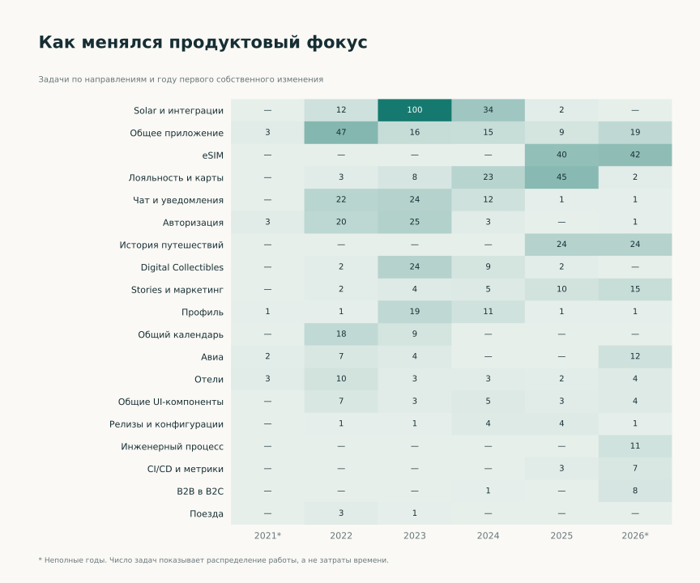

Статистика вклада
Период: 22.12.2021–28.09.2026. Графики показывают масштаб и структуру инженерной истории. Кейсы раскрывают содержание работы и решения.
Изменения кода по годам
4 046 авторских коммитов без merge. Разные записи могут представлять переносы одного изменения.


Задачи по годам
831 задача, связанная с собственными изменениями кода. Год соответствует первому изменению по задаче, а не её завершению.



Направления работы
Каждая задача отнесена к одному направлению; классификация подготовлена для портфолио.



Характер задач
Фичи, исправления, проверки, инженерные изменения и релизы. Количество задач не отражает их трудоёмкость.



История по месяцам
Неполные декабрь 2021 и сентябрь 2026. Отсутствие коммитов не означает отсутствие работы.



Работа с тестами
788 коммитов затрагивают тестовые пути. Это не покрытие кода и не число написанных тестов.


Как менялся продуктовый фокус
Распределение задач по направлениям и году первого собственного изменения. В ячейках указано число задач.



Числовая таблица
| Год | Коммиты без merge | Задачи с первым изменением в этом году | Коммиты с тестовыми путями |
|---|---|---|---|
| 2021* | 32 | 12 | 0 |
| 2022 | 1034 | 155 | 12 |
| 2023 | 926 | 241 | 50 |
| 2024 | 487 | 125 | 119 |
| 2025 | 855 | 146 | 303 |
| 2026* | 712 | 152 | 304 |
*Неполные годы. Как читать показатели · Агрегированные данные.